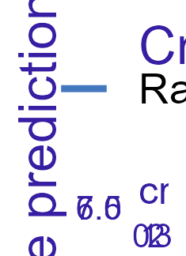
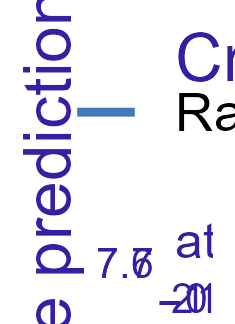
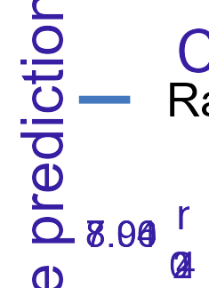
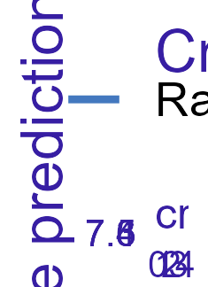

Feature: arable_size

Get this object: archivist::loadFromLocalRepo(md5hash = "c7eebab3ef2c731128f7942240762385", repoDir = "C:/Users/jmurera/Desktop/Crop_Yield_Fokoue/Crop-Yield-Project/output/modeldown/repository")
Feature: crop_type_soya
Get this object: archivist::loadFromLocalRepo(md5hash = "7bf8aa9d87b403441f522471e7c3f696", repoDir = "C:/Users/jmurera/Desktop/Crop_Yield_Fokoue/Crop-Yield-Project/output/modeldown/repository")
Feature: rainfall

Get this object: archivist::loadFromLocalRepo(md5hash = "ffb3c29030e34db38bcd60dffabe8a8c", repoDir = "C:/Users/jmurera/Desktop/Crop_Yield_Fokoue/Crop-Yield-Project/output/modeldown/repository")
Feature: crop_type_beans
Get this object: archivist::loadFromLocalRepo(md5hash = "08e7e8df5e860da1df26aae01bad7dc2", repoDir = "C:/Users/jmurera/Desktop/Crop_Yield_Fokoue/Crop-Yield-Project/output/modeldown/repository")
Feature: atm_pressure
Get this object: archivist::loadFromLocalRepo(md5hash = "3b375524c2794fa9c0b3ec361b9f0940", repoDir = "C:/Users/jmurera/Desktop/Crop_Yield_Fokoue/Crop-Yield-Project/output/modeldown/repository")
Feature: crop_type_sweet_potatoes
Get this object: archivist::loadFromLocalRepo(md5hash = "9cc34fd158869d18c922df8266e9acd9", repoDir = "C:/Users/jmurera/Desktop/Crop_Yield_Fokoue/Crop-Yield-Project/output/modeldown/repository")
Feature: solar_rad
Get this object: archivist::loadFromLocalRepo(md5hash = "7359094116683d80839e2c6f43d9b123", repoDir = "C:/Users/jmurera/Desktop/Crop_Yield_Fokoue/Crop-Yield-Project/output/modeldown/repository")
Feature: evapo_trans
Get this object: archivist::loadFromLocalRepo(md5hash = "714acbb4be2a0b6b46cfcde9a3e12cce", repoDir = "C:/Users/jmurera/Desktop/Crop_Yield_Fokoue/Crop-Yield-Project/output/modeldown/repository")
Feature: crop_type_vegetables
Get this object: archivist::loadFromLocalRepo(md5hash = "0e9ff458344fa891a18ea7262bbcb013", repoDir = "C:/Users/jmurera/Desktop/Crop_Yield_Fokoue/Crop-Yield-Project/output/modeldown/repository")
Feature: crop_type_banana
Get this object: archivist::loadFromLocalRepo(md5hash = "f28e457abdee34c70d0918a4c8eb230e", repoDir = "C:/Users/jmurera/Desktop/Crop_Yield_Fokoue/Crop-Yield-Project/output/modeldown/repository")
Feature: l_stemp
Get this object: archivist::loadFromLocalRepo(md5hash = "78103e9dc093f54dddfcff193ff0bfbe", repoDir = "C:/Users/jmurera/Desktop/Crop_Yield_Fokoue/Crop-Yield-Project/output/modeldown/repository")
Feature: ndvi
Get this object: archivist::loadFromLocalRepo(md5hash = "9ef01b0f7486b8c4626e52a4a027289a", repoDir = "C:/Users/jmurera/Desktop/Crop_Yield_Fokoue/Crop-Yield-Project/output/modeldown/repository")
Feature: crop_type_Sorghum
Get this object: archivist::loadFromLocalRepo(md5hash = "9247eac64e318e5239f3040e9edd2970", repoDir = "C:/Users/jmurera/Desktop/Crop_Yield_Fokoue/Crop-Yield-Project/output/modeldown/repository")
Feature: crop_type_Cassava
Get this object: archivist::loadFromLocalRepo(md5hash = "172ea903d8d256a7babd5416421c42d7", repoDir = "C:/Users/jmurera/Desktop/Crop_Yield_Fokoue/Crop-Yield-Project/output/modeldown/repository")
Feature: crop_type_yams
Get this object: archivist::loadFromLocalRepo(md5hash = "88d1dfdea252e45a517e7c05f749c12e", repoDir = "C:/Users/jmurera/Desktop/Crop_Yield_Fokoue/Crop-Yield-Project/output/modeldown/repository")